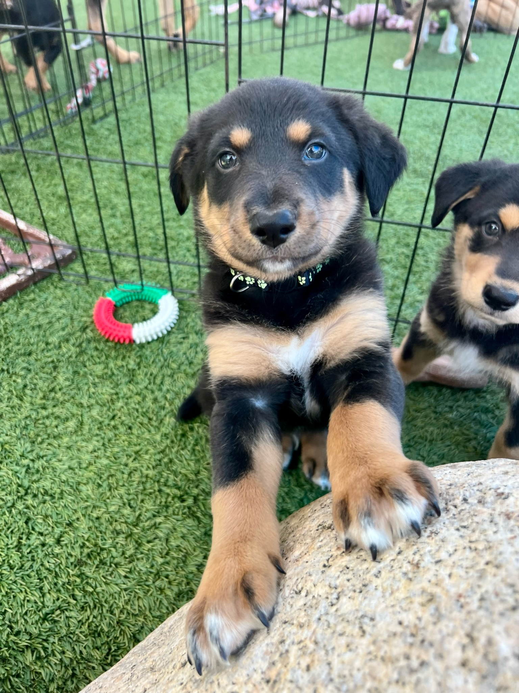

Ready to Adopt?
Thank you for considering adopting from Mission Bay Puppy Rescue! Our goal is to make thoughtful, lasting matches for both our puppies and their new families.
Before submitting an application, please be sure you are genuinely ready to adopt a dog or puppy within the next 2–3 weeks.

Important Requirements
- You must be 22 or older to apply. The person who will legally adopt and be responsible for the dog must complete the application.
- We strongly prefer homes where someone is home most of the day.
- Young puppies cannot be left alone for long periods. Puppies under 6 months may not routinely be left alone for more than 4 hours.
- Everyone in the household must be ready for a new dog. If you rent, please have your landlord's approval before applying.
- Current household pets must be spayed or neutered, unless there is a documented medical reason otherwise.
Please apply only if you intend to follow through.
After reviewing your application, we may contact you by text, phone or email. Please watch for our message and respond so we know you are still interested.
Adoption Application
The application below includes our short pre-check first. Qualified applicants continue on to the full form.
Applying On Behalf Of Family?

Sometimes a teen submits the form on behalf of parents or an adult family member. Our rule: the adult who will legally adopt and be responsible for the dog should be the one who completes the application.
If a young person is helping a parent apply, the form should clearly say so up front.